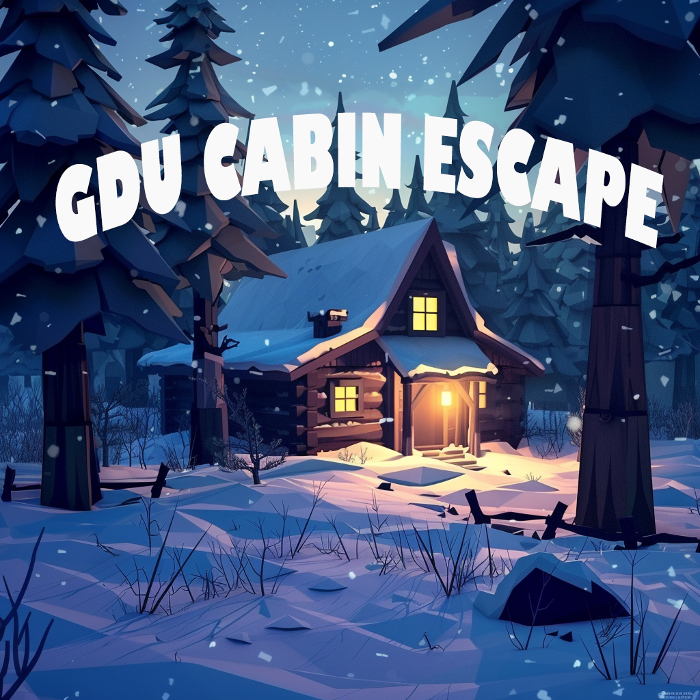

Project Overview
"GDU GameJam: Cabin" is a first-person interactive puzzle game created for the Game Dev Unlocked Game Jam #7 - Winter Edition. The game challenges players to escape a winter cabin by collecting objects matching those above the door. Originally developed as a short puzzle game, it incorporates elements of exploration and problem-solving.
As the sole programmer and designer, I leveraged my expertise in Unreal Engine 5 and C++ to create a captivating game in just a few days. The game features custom Interaction and Inventory Systems with a basic Puzzle system
View on GitHub View Store PageKey Features
- Custom Interaction System: Allows players to examine and interact with various objects in the cabin.
- Inventory Management: Players can collect, combine, and use items to solve puzzles.
- Atmospheric Audio: Immersive sound design enhances the eerie cabin atmosphere.
- Optimized Performance: Smooth gameplay even on mid-range hardware.
Code Snippets
Interaction System
+
// This method handles the interaction with objects in the game.
void APlayerChar::Interact()
{
// If the inventory is open or the player is already inspecting an item, do nothing.
if (bIsInventoryOpen) return;
if (!bIsInspecting)
{
// Attempt to cast the hit result to an AItem object.
AItem* InteractedItem = Cast(InteractHitResult.GetActor());
// Further cast to AInteractableItem if possible.
AInteractableItem* InteractableItem = Cast(InteractedItem);
// If the cast is successful and the item is interactable...
if (InteractableItem)
{
// Check if the interactable item requires another item to be in the player's inventory.
if (!InteractableItem->RequiredItemName.IsNone())
{
// Verify if the required item exists in the inventory.
bool bHasRequiredItem = Inventory.ContainsByPredicate([&](const FItemData& ItemData)
{
return ItemData.ItemName == InteractableItem->RequiredItemName;
});
// If the required item is in the inventory, interact with the object.
if (bHasRequiredItem)
{
InteractableItem->Interact();
}
else
{
// If the required item is not in the inventory, show a custom message and play a sound.
ShowCustomText(InteractableItem->CustomNeedItemText);
UGameplayStatics::PlaySoundAtLocation(this, RequireItemSound, GetActorLocation());
}
}
else
{
// If no specific item is required, just interact with the object.
InteractableItem->Interact();
}
}
else if (InteractedItem)
{
// If an item was hit but it's not interactable, start inspecting it.
StartInspectingItem(InteractedItem);
}
}
}
// This line binds the "Interact" action to the Interact method above.
PlayerInputComponent->BindAction("Interact", IE_Pressed, this, &APlayerChar::Interact);
// Other input bindings would follow here...
Storing Inventory Item System
+
// Store the item that the player is currently inspecting
void APlayerChar::StoreInspectedItem()
{
// Ensure UI widgets revert to their default visibility states
if (DotWidget) DotWidget->SetVisibility(ESlateVisibility::Visible);
if (InteractWidget) InteractWidget->SetVisibility(ESlateVisibility::Collapsed);
// Exit the function if no item is being inspected
if (!CurrentlyInspectedItem) return;
// Validate that the ItemDatabase is available
if (!ItemDatabase) return;
const FItemData* Data = ItemDatabase->Items.FindByPredicate([&](const FItemData& ItemData)
{
// Check if the item class matches the inspected item
return ItemData.Class == CurrentlyInspectedItem->GetClass();
});
if (Data)
{
if (Data->bCanBePickedUp)
{
// Add the item to the player's inventory and remove it from the game world
Inventory.Emplace(*Data);
CurrentlyInspectedItem->Destroy();
if (GetWorld())
{
// Play a sound effect when the item is added to the inventory
UGameplayStatics::PlaySound2D(GetWorld(), AddToInventorySound);
}
}
else
{
// Discard the item if it cannot be picked up
DiscardInspectedItem();
}
}
else
{
// If the item is not in the database, discard it
DiscardInspectedItem();
}
// Reset the state to indicate the player is no longer inspecting an item
bIsInspecting = false;
CurrentlyInspectedItem = nullptr;
// Revert the player controller settings to resume normal gameplay
APlayerController* PlayerController = Cast(GetController());
if (PlayerController)
{
PlayerController->SetInputMode(FInputModeGameOnly());
PlayerController->SetCinematicMode(false, true, true);
PlayerController->bShowMouseCursor = false;
}
}
Inspecting Inventory Item
+
// Function to initiate the item inspection process
void APlayerChar::StartInspectingItem(AItem* Item)
{
// If there is no item, exit the function early
if (!Item) return;
// Save the item's original location and rotation to restore later
OriginalItemLocation = Item->GetActorLocation();
OriginalItemRotation = Item->GetActorRotation();
// Hide the on-screen dot and interaction widgets while inspecting
DotWidget->SetVisibility(ESlateVisibility::Hidden);
InteractWidget->SetVisibility(ESlateVisibility::Hidden);
// Set the current item being inspected and flag the inspection state as true
CurrentlyInspectedItem = Item;
bIsInspecting = true;
// If the item cannot be picked up, but it's still interactable
AInteractableItem* InteractableItem = Cast(Item);
if (InteractableItem && !InteractableItem->bCanBePickedUp)
{
// Here you could interact with or show feedback for non-pickable items
}
// Disable physics on the item to keep it stationary during inspection
UStaticMeshComponent* StaticMeshComponent = Item->FindComponentByClass();
if (StaticMeshComponent)
{
StaticMeshComponent->SetSimulatePhysics(false);
StaticMeshComponent->SetCollisionEnabled(ECollisionEnabled::NoCollision);
}
// Position the item relative to the camera for inspection
// The location offset for the item when inspecting
const FVector InspectionRelativeLocation = FVector(100.f, 0.f, 0.f);
// The rotation offset for the item when inspecting
const FRotator InspectionRelativeRotation = FRotator(0.f, 180.f, 0.f);
Item->AttachToComponent(Cast(GetController())->PlayerCameraManager->GetTransformComponent(), FAttachmentTransformRules::KeepRelativeTransform);
Item->SetActorRelativeLocation(InspectionRelativeLocation);
Item->SetActorRelativeRotation(InspectionRelativeRotation);
// Restrict player movement during the inspection by enabling cinematic mode
APlayerController* PlayerController = Cast(GetController());
if (PlayerController)
{
PlayerController->SetCinematicMode(true, true, true);
}
}
Lessons Learned and Challenges Faced
Lessons Learned:
- Rapid Prototyping: The importance of quickly implementing core mechanics and iterating on them.
- Scope Management: Learning to prioritize essential features and cut non-critical elements to meet the tight deadline.
- Performance Optimization: Balancing visual fidelity with performance, especially when using Unreal Engine 5's advanced features.
- Asset Creation Pipeline: Developing a streamlined workflow for creating and importing assets efficiently.
Challenges Faced:
- Time Constraint: Developing a complete game in 48 hours required careful planning and efficient use of time.
- Feature Creep: Resisting the temptation to add unnecessary features that could jeopardize the project's completion.
- Performance Issues: Initially, the game suffered from performance problems due to the complexity of the lighting system. This required optimization of the level design and careful use of Lumen settings.
- Bug Fixing Under Pressure: Identifying and fixing critical bugs quickly while maintaining the development momentum.